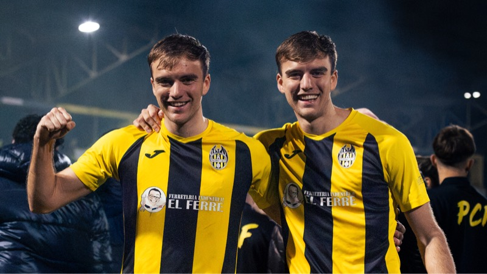

Fotógrafo deportivo en Valencia
Fotografía para clubes, deportistas y competiciones: la acción, la tensión y la celebración, contadas con fotos que dan ganas de compartir.
Para quién
¿En qué te puedo ayudar?
Clubes y entidades
Cobertura de partidos, fotos de plantilla, presentaciones de equipaciones y contenido para la temporada.
Deportistas
Retratos y fotos de acción para tu marca personal, tus redes y tus patrocinadores.
Competiciones y torneos
Torneos, campus, carreras y eventos deportivos, con fotos listas para publicar.
Marcas y patrocinadores
Imágenes de campaña con deportistas reales y en contexto real.
Portfolio
Baloncesto, fútbol, esgrima y más


Cómo trabajo
Tres pasos, sin complicaciones
- 01
Cuéntame
Rellena el formulario o escríbeme por WhatsApp: fecha, lugar y qué tienes en mente.
- 02
Propuesta
En menos de 24 h te envío una propuesta adaptada a lo que necesitas, con precio cerrado.
- 03
Sesión y entrega
Hago las fotos y te entrego una galería online con la selección editada, lista para compartir.
FAQ
Preguntas frecuentes
¿Qué deportes fotografías?
Baloncesto, fútbol, esgrima y mucho más. Me adapto a pista cubierta, campo abierto y condiciones de poca luz.
¿Cuánto tardas en entregar las fotos de un partido?
La galería completa suele estar en 1–2 semanas. Si necesitas fotos rápidas para redes después del partido, lo incluimos en la propuesta.
¿Puedo usar las fotos para patrocinadores y prensa?
Sí. Los usos (redes, web, prensa, publicidad) se acuerdan en el presupuesto para que no tengas dudas.
¿Haces packs para toda la temporada?
Sí, para clubes que necesitan cobertura recurrente preparo una propuesta por temporada o por número de partidos.
Presupuesto en 24 h
¿Hablamos de tu proyecto?
Cuéntame qué necesitas y te envío una propuesta a medida, sin compromiso.
- Respuesta personal en menos de 24 h
- Propuesta clara, sin letra pequeña
- Valencia y alrededores, y desplazamientos